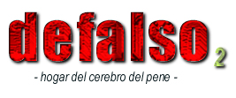

Defacto2.net has been hacked. This is
the hacked page. Forward all complaints to luv2blds97@aol.com
Monday 2st November (12:00pm GMT) - The Scene Really Sucks
The warez groups are nothing more than a bunch of anal licking faggots. All they do is
make stupid mini bureaucracies which do nothing. The most important reason why the
"scene" sucks is that the only people who actually can get a copy of the pirated software
are members of the groups themselves.
Here is a list of all the groups that suck:
Class
Paradigm
Addication
Origin
X-force
Robinhood
Impulse
Demon
Fate
RISC
Nemesis
Glow
Ace
Indigo
FBW
ZMI
Siege
Revenge
Razor
Darkstar
Rise
PGC
DSI
FB
Core
NOBLiEGE
TKC
GWA
SWAT
F4GC
blizzard
2000AD
TNO
ECG
UCF
RBS
DSN
DDT
MFD
VQI
TNO
PROPHECY
PWA
EXPLiCiT
Resource
ORBiT
Entity
FALLEN
PFT
SPRITEX
VERSUS
Warp98
Evil
Manifest
Frog
SGM
950
Basicly you all suck except for Logic, Legion, Arise, and UPS.
Go to hell!